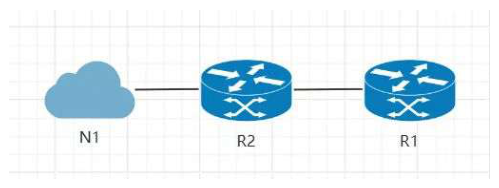
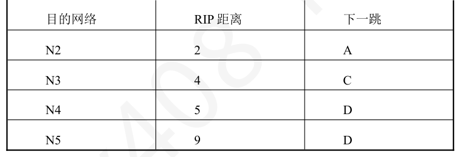
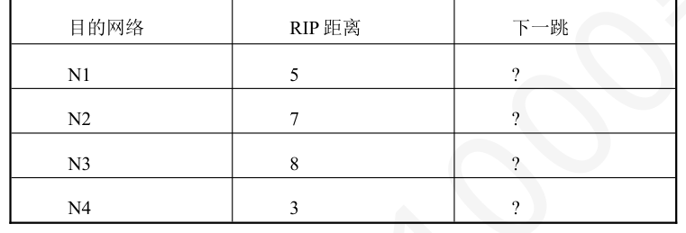

第 61 题
一个采用RIP 协议的路由网络中，路由器R1 的当前路由表有一条到达网络N 的路由，其下一跳为R2，跳数为4。此时，R1 又收到了来自邻居路由器R2 的更新报文，其中包含路由信息<N, 7>。 R1 将如何更新路由表？
- A．将到达网络N 的路由跳数更新为8
- B．维持原路由不变，因为新路径的成本更高
- C．将到达网络N 的路由跳数更新为7
- D．删除该路由条目，等待更优的路径出现
答案与解析
答案：A
只有当R1 从另一个邻居（比如R3）收到一条成本更高的路径时，它才会因为路由成本更高而忽略它。但对于来自当前下一跳的更新，必须接受。因此R1 收到R2 关于网络N 的路由信息，会将原路由表中信息更新。
第 62 题
在下图所示的网络中，采用RIP 协议和水平分割机制，初始时R1 的路由表为空。R2 向R1 发送自己的距离向量，其中关于N1 的条目是什么？R1 收到来自R2 的距离向量后，向R2 发送自己的距离向量，其中关于网络N1 的条目最可能是什么？

- A． <N1，1>，<N1，2>
- B． <N1，1>，不包含该路由条目
- C． <N1，2>，<N1，3>
- D．<N1，2>，不包含该路由条目
答案与解析
答案：B
R2 和网络N1 直连，因此R2 自己的路由表中关于N1 的条目是<N1，1>，R2 会将该路由条目直接发送给R1。R1 收到之后，将跳数加1，下一跳修改为R2，之后加入自己的路由表。由于采用了水平分割机制，让路由器记录收到某个特定路由信息的接口，而不让同一路由信息再通过此接口向反方向传送，因此在R1 向R2 发送自己的距离向量时，不会发送此前从R2 处学习到的关于N1的路由信息。
第 63 题
假设一个网络运行着距离矢量路由选择协议如果路由器A 和路由器B、路由器C 之间的链路开销为分别为1、3。某个时刻，路由器A 收到了从B 发送过来的距离矢量，列出了B 与A，B，C，D之间的开销依次是(1，0，1，5)；A 同时收到了C 发送过来的距离矢量(3，1，0，1)。A 更新了自己的距离矢量，可能是（）
- A．(0，1，2，1)
- B．(0，1，3，1)
- C．(0，1，2，4)
- D．(2，1，2，4)
答案与解析
答案：C
将B 的每一个距离矢量+1，将C 的每一个距离矢量+3，取他们的最小值，除了到达自己本身的开销为0。结果是（0，1，2，4）。
第 64 题
路由器A 和B 是使用RIP 协议的相邻路由器，A 和B 的路由表如下。A 给B 发送RIP 更新报文，B 收到该报文后更新自己的路由表，则更新后B 的路由表中路由条目的数量和被更新的原路由条目的数量分别为（）。 A 的路由表B 的路由表


- A．4，1
- B．4，2
- C．5，1
- D．5，2
答案与解析
答案：D
路由器B 在收到邻居A 的RIP 更新报文后，会将其中的每一条路由与自己的路由表进行比较。首先，B的路由表中没有网络N1的条目，因此会从A学习并新增该路由（距离为5+1=6），此时B 的路由表总数变为5 条。接着，对于已有条目，B 会进行判断：到达网络N4 的新路径（距离3+1=4）比原路径（距离5）更优，因此会更新该条目；到达网络N2的新路径（距离7+1=8）虽然比原路径（距离2）更差，但由于原路径的下一跳就是A，B 必须接受来自A 的更新；而到达网络N3 的新路径（距离8+1=9）劣于B 当前已有的更优路径（距离4），故不更新。因此，最终B 的路由表总条目数为5，而被更新的原有条目为N2 和N4 这两条。
第 65 题
下列关于常见网络协议及其封装的叙述中，错误的是（ ）。
- A．RIP 报文被封装在UDP 用户数据报中，并通过目的端口号520 交付给RIP 进程
- B．OSPF 是一种链路状态协议，其报文直接封装在IP 数据报中，IP 协议号为89
- C．BGP 会话的双方通过TCP 端口179 建立连接，以保证路由更新的可靠性
- D．由于OSPF 不使用TCP，因此它是一种不可靠的路由协议
答案与解析
答案：D
OSPF 虽然没有使用TCP，但它在协议内部自己设计了复杂的确认和重传机制，足以保证其链路状态信息的可靠同步。因此，OSPF 是可靠的路由协议，故D 错误。
第 66 题
下图所示的网络中，采用了OSPF 来配置路由器。如果要从NetA 到达NetB，应该选择哪条路径?
- A．R1，R2，R5，R7
- B．R1，R3，R5，R6，R7
- C．R1，R3，R5，R7
- D．R1，R3，R6，R7
答案与解析
答案：C
OSPF采用最短路径优先算法计算最优路径，从Net A到Net B的最优路径是R1-R3-R5-R7，开销是2+5+7+14+2=30，最小开销的那条。
第 67 题
在一个OSPF 区域内的所有路由器，在收敛之后，它们都拥有（ ）。
- A．相同的路由表
- B．相同的链路状态数据库
- C．到达所有目的网络的相同路径
- D．相同的指定路由器（DR）
答案与解析
答案：B
链路状态协议的核心思想就是，通过泛洪（Flooding）机制，确保同一区域内的所有路由器最终拥有一个完全相同的链路状态数据库（LSDB）。
第 68 题
在OSPF 的多区域结构中，关于骨干区域的描述，正确的是（ ）。
- A．骨干区域是唯一可以与外部自治系统相连的区域。
- B．骨干区域内的路由器不能成为区域边界路由器（ABR）。
- C．所有非骨干区域都必须与骨干区域直接相连。
- D．骨干区域只负责传递路由信息，不承载用户数据流量。
答案与解析
答案：C
OSPF规定，任何两个非骨干区域之间的路由信息交换，都必须经过Area0 中转，因此所有非骨干区域都必须与骨干区域直接相连，C 正确。
第 69 题
OSPF 协议使用（ ）分组来保持与其邻居的连接。
- A．Hello
- B．Keepalive
- C．SPF（最短路径优先）
- D．LSU（链路状态更新）
答案与解析
答案：A
OSPF 协议的分组类型有5 种：Hello 分组：发现相邻路由器并建立邻居关系，还可保持邻居的可达性；DBD 分组：给出链路状态数据库的摘要信息，供邻居对比自身数据库并找出需要的信息LSR 分组：请求对方发送特定链路的详细信息；LSU分组：以洪泛方式发出链路状态通告，响应链路状态请求分组；LSACK 分组：对链路状态更新分组进行确认。Keepalive报文是BGP-4 的报文类型，用于发布或撤销网络的可达性信息，即向邻站通告新的网络，或当网络变为不可达时，撤销原来的可达性信息。用来保持与邻居的连接的OSPF协议分组为Hello分组，故选择A 选项。
第 70 题
在使用OSPF 协议时，若某路由器缺少邻居路由器链路状态数据库中某些项目详细信息，会发送（）分组。
- A．问候分组
- B．数据库描述分组
- C．链路状态请求分组
- D．链路状态更新分组
答案与解析
答案：C
为了获取这些缺失或过时条目的完整详细信息，路由器会发送一个链路状态请求 （LSR）分组，明确指出需要哪些LSA 的详细内容。
第 71 题
OSPF 的Hello 分组被封装在IP 数据报中，则IP 数据报首部中的目的IP 地址和协议号分别为
- A．224.0.0.5，89
- B．0.0.0.0，6
- C．255.255.255.255，17
- D．255.255.255.255，2
答案与解析
答案：A
OSPF 协议通过发送Hello 分组来发现和维护邻居关系。为了使同一链路上的所有OSPF 路由器都能接收到这些分组，OSPF 使用组播进行通信。224.0.0.5 是预留给所有OSPF 路由器的专用组播地址。因此，当一台路由器发送Hello分组时，其IP头部的目的地址字段会被设置为224.0.0.5。选项C 和D 中的255.255.255.255 是广播地址，不适用于OSPF。OSPF 报文是直接封装在IP数据报中的，它不使用TCP或UDP等运输层协议。在IP数据报首部中，有一个8位的“协议”字段，用于指明其数据部分所承载的是哪种上层协议。根据IANA 的规定，分配给OSPF 协议的协议号是89。选项B 中的协议号6 代表TCP，选项C 中的17 代表UDP，均不正确。
第 72 题
在两个自治系统的边界路由器R1 和R2 之间成功建立了BGP 连接。在运行过程中，R1 从R2收到了一个UPDATE 报文，但在解析时发现该报文中缺少一个BGP 协议定义的某个属性。根据BGP 协议的规定，R1 此时应当发送下列哪种报文来响应这一差错情况？（ ）
- A．OPEN
- B．KEEPALIVE
- C．UPDATE
- D．NOTIFICATION
答案与解析
答案：D
BGP有四种报文类型：OPEN（打开）、KEEPALIVE（保活）、UPDATE（更新）和NOTIFICATION（通知）。OPEN 用来与相邻的另一个BGP 发言人建立关系，使通信初始化。 KEEPALIVE 用来周期性地证实邻站的连通性。UPDATE 用来通告某一条路由的信息以及列出要裁撤的多条路由。NOTIFICATION 用来发送检测到的差错。
第 73 题
一个IP 组播组的成员是（ ）。
- A．物理上位于同一地理区域的一组主机。
- B．逻辑上属于同一个IP 子网的一组主机。
- C．一组希望接收发往同一个特定组播地址的数据的主机集合，其成员是动态变化的。
- D．一组由网络管理员预先配置好的、固定不变的主机。
答案与解析
答案：C
组播组是一个逻辑上的概念。任何主机，无论其物理位置或IP 地址如何，只要它通过IGMP 协议向其本地路由器“声明”自己希望加入某个组播组（例如224.1.2.3），它就成为了该组的成员。这种成员关系是动态的，主机可以随时加入或离开。
第 74 题
网际组管理协议（IGMP）运行于（ ）之间。
- A．组播源主机和组播目的主机。
- B．两台组播路由器。
- C．主机和它的本地组播路由器。
- D．应用层进程和运输层协议。
答案与解析
答案：C
IGMP 协议只工作在本地网络中，用于主机向其直连的路由器加入或离开某个组播组。它不是一个用于在路由器之间传播路由信息的协议，也不是端到端的协议。
第 75 题
以下有关IP 多播的相关描述中，错误的是
- A．IP 多播需要使用网际组管理协议IGMP 和普通路由选择协议
- B．IP 多播分为两种：一种是只在本地局域网上进行硬件多播，另一种则是在因特网的范围进行多播
- C．IP 多播使用D 类IP 地址
- D．IP 多播地址只能用于目的地址，而不能用于源地址
答案与解析
答案：A
IP 多播需要使用两种协议：网际组管理协议IGMP、多播路由选择协议。
第 76 题
当一个局域网内的多台主机都加入了同一个IP 组播组时，如果本地路由器发送了一个IGMP普通查询报文，将会发生什么？
- A．所有加入该组的主机都会立即回复一个成员报告报文。
- B．只有一台主机需要回复成员报告报文，其他主机侦听到后会抑制自己的回复。
- C．只有新加入的主机会回复。
- D．只有该组播组选举出的代表主机会回复。
答案与解析
答案：B
为了减少网络上不必要报文，IGMP 协议规定，当收到通用查询后，该组内的每台主机都会启动一个随机的计时器。第一个计时器到期的主机会发送一个成员关系报告。网络上的其他同组成员在发送自己的报告前，会先侦听网络。一旦它们听到了已有人替本组发出了报告，它们就会取消自己的计时器，不再发送报告。这样，路由器只要收到一个报告，就知道本网段还有成员，从而避免了报告报文的泛滥。
第 77 题
IGMP 协议报文封装在哪个协议的数据部分中？
- A．TCP
- B．UDP
- C．IP
- D．ICMP
答案与解析
答案：C
IGMP 是网络层的协议，用于协助IP 组播。因此，IGMP 报文被直接封装在IP 数据报中，其IP 首部的协议字段值为2。
第 78 题
一个支持组播的路由器，其维护的信息不包括（ ）。
- A．一张组播路由表，用于决定组播数据报的转发路径。
- B．一张转发表，指明哪些接口需要转发特定组播分组。
- C．一张详尽的清单，记录了其每个直连网络中所有组播成员的具体IP 地址。
- D．通过IGMP 了解到的、其每个直连网络上有哪些活动的组播组。
答案与解析
答案：C
路由器只关心在其连接的某个网段上，对于某个组播组是否存在至少一个成员。它不关心、也不记录具体是哪几台主机、它们的IP 地址是什么。只要有一个成员存在，它就向该网段转发。
第 79 题
将IP 多播地址226.0.9.26 和226.128.9.26 转换成以太网的硬件多播地址分别是（ ）。
- A．00-00-5E-00-00-00, 00-00-5E-7F-FF-FF
- B．01-00-5E-00-09-26, 01-00-5E-10-09-26
- C．01-00-5E-00-09-1A, 01-00-5E-00-09-1A
- D．00-00-5E-7F-FF-FF, 00-00-5E-00-00-00
答案与解析
答案：C
IP 多播地址低28 位可任意变化，但是以太网多播MAC 地址仅23 位可以任意变化，因此会存在多个IP地址被映射到同一个MAC地址。将IP多播地址映射到MAC多播地址时， MAC 多播地址的高25 位保持不变（前24 位始终是01-00-5e，第25 位始终是0），低23 位取IP 多播地址的低23 位即可。
第 80 题
若一个IP 组播地址为224.128.10.5，则根据IPv4 组播地址到以太网MAC 地址的映射规则，其对应的组播MAC 地址是（ ）。
- A．01-00-5E-80-0A-05
- B．01-00-5E-00-0A-05
- C．01-00-5E-7F-0A-05
- D．01-00-5E-80-0A-05
答案与解析
答案：B
IPv4 组播地址到以太网MAC 地址的映射规则为MAC地址的前3 个字节为01- 00-5E，MAC 地址的第4 个字节，取IP 地址的第2 个字节，并将其最高位置为0，MAC 地址的第5 和第6 个字节，直接使用IP 地址的第3 和第4 个字节。
第 81 题
某主机加入了IP 组播组225.1.2.3，由于地址映射冲突，它不会意外地接收到发往下列哪个组播组的分组？
- A．225.1.2.4
- B．226.1.2.3
- C．225.129.2.3
- D．224.1.2.3
答案与解析
答案：A
IP 地址中只有后23 位被映射到MAC 地址中，而IP 组播地址有28 位是可变的 （高4 位1110 固定），这意味着有28-23=5 个比特的信息在映射中丢失了。因此，多个（最多32 个）不同的IP 组播地址可能会映射到同一个MAC 地址，从而产生冲突。B、C、D 对应IP 地址的后23 位与225.1.2.3 相同，会导致主机意外接收到发往这些组播组的分组，因此选择A。
第 82 题
下列关于在因特网上进行IP 多播的说法中，正确的是（ ）。
- A．若某主机H 不是多播组A 的成员，则H 不可以向多播组A 发送多播数据报。
- B．多播组一旦建立，多播转发树的拓扑结构就不会改变。
- C．为了覆盖多播组的全部成员，多播转发树可能经过一些没有多播组成员的路由器。
- D．IP 多播地址到以太网MAC 地址的映射是一一对应的，因此主机网卡不会收到非目标组的多播帧。
答案与解析
答案：C
IP 组播模型中，发送者和接收者的角色是分离的。任何主机，无论它自身是否加入了某个组播组，都可以向该组播组的地址发送数据报，故A 错误。组播转发树的拓扑结构会因为网络拓扑和组成员关系的变化而变化，是动态的，故B 错误。IP 组播地址到以太网MAC 地址的映射不是一一对应的，而是多对一的。MAC 组播地址的前24 位固定为01-00-5E，第25 位为0，只剩下23 位可供映射，而IP 组播地址（D 类）的前4 位是1110，后面有28 位是可变的组标识。映射时，只将IP组播地址的后23 位复制到MAC地址的后23位。这导致IP组播地址中剩下的5位信息丢失了。因此，会有32 个不同的IP 组播地址映射到同一个MAC 组播地址上，故D 错误。为了覆盖多播组全部成员，多播转发树可能包含一些中间的路由器。这些路由器本身可能并不直接连接任何该组播组的成员，它们的作用仅仅是作为转发节点，将收到的组播数据报沿着树的下一个分支继续转发下去，故C正确。
第 83 题
IGMP 成员查询报文被封装在IP 多播数据报中，IP 多播数据报的目的地址和生存时间TTL 分别为（）。
- A．224.0.0.1, 1
- B．224.0.0.1, 255
- C．224.0.0.2, 1
- D．224.0.0.2, 255
答案与解析
答案：A
封装了IGMP 成员查询报文的IP 多播数据报，其目的地址为224.0.0.1，这是一个特殊的IP 多播地址，本网络中所有参加多播（无论参加的哪个组）的主机和路由器都会收到该多播数据报。由于IGMP 仅在本网络内有效，因此封装了IGMP 报文的IP 多播数据报，其首部中的生存时间TTL 字段均会被设置为1，以避免封装了IGMP 报文的IP 多播数据报被路由器转发至其他网络。
第 84 题
关于移动IP 中的转交地址（COA），下列说法错误的是（ ）。
- A．转交地址标识了移动节点当前所处的位置。
- B．转交地址可以是外地代理的地址。
- C．转交地址可以由移动节点通过DHCP 动态获取。
- D．转交地址在移动节点开机时就已确定，且永不改变。
答案与解析
答案：D
转交地址是临时的、与位置相关的。当移动节点从一个外地网络移动到另一个外地网络时，它会获得一个新的转交地址，并需要向归属代理重新注册。因此，转交地址是会随着移动节点的漫游而改变的。永不改变的是归属地址。
第 85 题
在移动IP 中，如何将发往移动节点归属地址的数据报转发到其当前的转交地址？
- A．修改原始IP 数据报的目的地址为转交地址。
- B．将原始IP 数据报作为载荷，封装在一个新的IP 数据报中。
- C．将原始IP 数据报加密后传输。
- D．将原始IP 数据报的IP 首部和TCP 首部都替换掉。
答案与解析
答案：B
在移动IP 中，使用隧道技术将发往移动节点归属地址的数据报转发到其当前的转交地址。隧道技术的本质是一种封装。归属代理收到发往移动节点的原始IP 数据报后，并不修改它，而是把它看作一个整体的数据块，在其外部再封装上一个新的IP 首部。
第 86 题
在归属代理通过隧道技术向移动节点转发分组时，封装后的外部IP 数据报的首部中，源IP 地址和目的IP 地址分别是（ ）。
- A．通信对端的IP 地址，移动节点的归属地址。
- B．移动节点的归属地址，通信对端的IP 地址。
- C．归属代理的IP 地址，移动节点的转交地址。
- D．移动节点的转交地址，归属代理的IP 地址。
答案与解析
答案：C
封装后的外部IP 数据报的目的是将内部的原始数据报从归属代理转发到转交地址。因此，它的源地址是发送方HA 的地址，目的地址是接收方（外地代理或移动节点自身）的转交地址。而被封装的内部IP 数据报的源目地址（通信对端IP、移动节点归属地址）保持不变。
第 87 题
下列关于移动IP 的说法中，错误的是（ ）。
- A．移动IP 是网络层的协议，对运输层及以上是透明的。
- B．移动节点在外地网络时，至少拥有归属地址和转交地址两个地址。
- C．通信对端（一个正在和移动节点通信的普通主机），必须要支持移动IP 相关协议。
- D．移动节点向通信对端发送IP 分组，无需经过归属代理。
答案与解析
答案：C
移动IP 对通信对端是透明的。通信对端像往常一样，只对移动节点的永久归属地址发送数据报，归属代理收到后再转发给移动节点的转交地址，再由移动节点的外地代理转发给移动节点，故C 错误。
第 88 题
一个在外地网络的移动节点，向Web 服务器发起HTTP 请求（使用TCP）。在此TCP 连接的三次握手过程中，移动节点发送的SYN 报文的源IP 地址，以及Web 服务器返回的SYN+ACK 报文的目的IP 地址分别是（ ）。
- A．转交地址，转交地址
- B．转交地址，归属地址
- C．归属地址，转交地址
- D．归属地址，归属地址
答案与解析
答案：D
移动IP 对运输层透明。这意味着TCP 层在建立连接时，始终使用稳定不变的归属地址作为自己的身份标识。移动节点发送SYN报文，IP 层的源地址是归属地址。Web 服务器收到后，会向这个连接的端点回复SYN+ACK 报文，IP 层的目的地址是移动节点的归属地址。这个报文会被路由到归属代理，再被隧道转发。
第 89 题
下列关于移动IP 的说法中，错误的是（ ）。
- A．当移动主机不在归属网络时，归属代理会以自己的MAC 地址应答所有对该移动主机的ARP 请求。
- B．外地代理解封出原IP 分组后，会查询路由表，将原IP 分组转发给移动节点的永久地址。
- C．所有使用同一外地代理的移动主机可以共享同一个转交地址。
- D．当移动节点来到一个新的外地网络后，需要获取新的转交地址，并向其归属代理重新注册。
答案与解析
答案：B
当外地代理从IP 隧道中收到并解封出原IP 数据报时，会在自己的代理注册表中查找移动主机的永久地址所对应的MAC 地址，并将该数据报封装到目的地址为该MAC 地址的帧中发送给移动主机。如果查询路由表，转发给移动节点的永久地址，会导致该IP 数据报又被发回移动主机的归属网络。
第 90 题
下面关于路由器的结构和功能，说法正确的是（ ） I．路由器分为路由选择部分和分组转发部分，其中分组转发部分由输入端口、输出端口和交换结构构成II．使用路由器能控制网络中的广播风暴III．路由表是通过路由算法计算得到，转发表是基于路由表得到的
- A．仅I、II
- B．仅I、III
- C．仅II、III
- D．I、II、III
答案与解析
答案：D
路由器的结构分为路由选择部分和分组转发部分，分组转发部分根据转发表将输入端的数据包移至适当的输出端口，包含一组输入端口、一组输出端口以及最核心的交换结构。I 正确; 路由器能隔离广播域，其每一个端口都是一个广播域，可控制网络中的广播风暴，Ⅱ正确;路由表是根据路由选择算法计算得到，通过软件来实现的。转发表用于将目的地址映射成输出链路，是基于路由表得到的，III 正确。故选择D 选项。